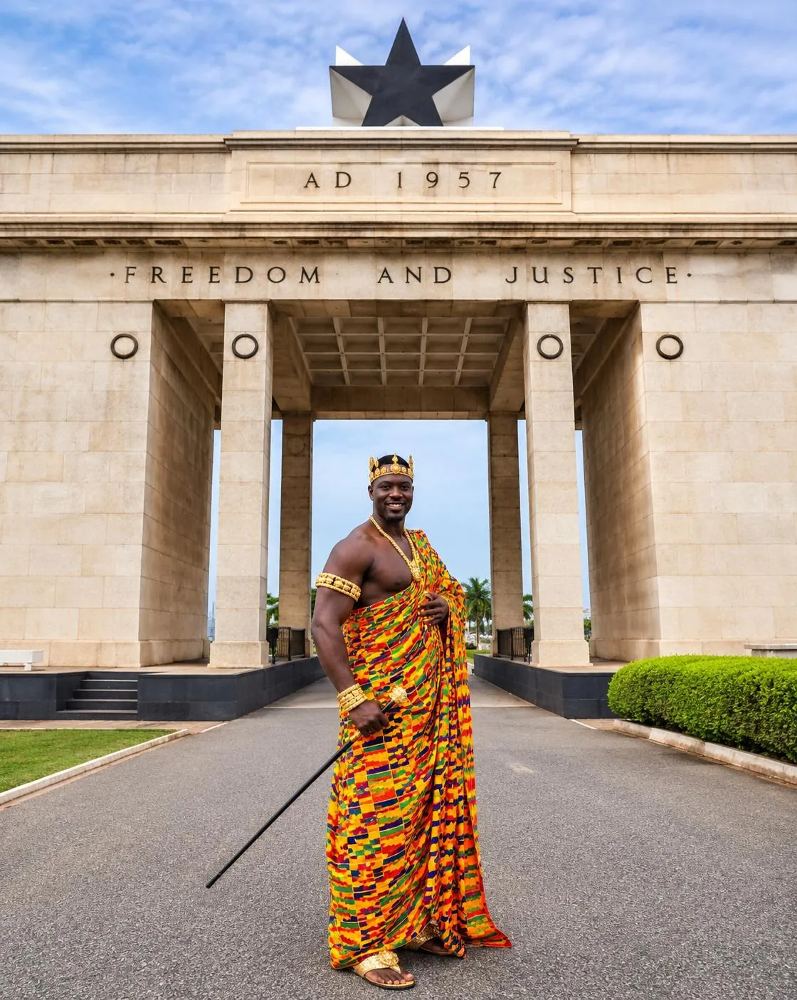

The parade
Traditionally, a national parade at Black Star Square in Accra, with schoolchildren, the security services and the President taking the salute, and celebrations in every region.
Saturday 6 March 2027 marks seventy years since the Gold Coast became Ghana at midnight on 6 March 1957. It is the Platinum Jubilee of Independence, and everyone who loves Ghana, from across the world, celebrates it together in London, 5 to 7 March 2027.

At midnight, before a vast crowd at the Old Polo Grounds, Kwame Nkrumah declared the Gold Coast free. The new nation took the name Ghana, after the ancient Ghana Empire of West Africa.
Ghana was the first country in sub-Saharan Africa to win independence from colonial rule, and within a decade most of the continent had followed.
“Ghana, your beloved country, is free forever.”
Twenty five years is a silver jubilee, fifty a golden jubilee and sixty a diamond jubilee. Seventy is platinum, the rarest of them all.
Ghana marked the Golden Jubilee in 2007 as Ghana at 50. On 6 March 2027 Ghana reaches the Platinum Jubilee, and London is gathering to mark it, with everyone welcome.
J. B. Danquah and others found the United Gold Coast Convention to campaign for self government. Kwame Nkrumah returns from London to become its general secretary.
On 28 February, ex servicemen who fought for Britain in the Second World War march to present a petition. Shots are fired at the crossroads, unrest follows, and the Big Six are arrested.
Nkrumah founds the Convention Peoples Party with a simple call: self government now.
The Convention Peoples Party wins the general election. Nkrumah is released from prison to lead the government, and becomes Prime Minister in 1952.
At midnight on 6 March, at the Old Polo Grounds in Accra, the Gold Coast becomes Ghana. Days later, Ghana joins the United Nations.
On 1 July, Ghana becomes a republic, with Kwame Nkrumah as the first President.
Ghana helps found the Organisation of African Unity in Addis Ababa, the forerunner of the African Union.
The Akosombo Dam opens, creating Lake Volta, one of the largest man made lakes in the world, and power for the nation.
Ghana passes through military and civilian governments, before a new constitution is approved by referendum in 1992.
On 7 January the Fourth Republic begins: a democracy in which power has since changed hands peacefully at the ballot box.
Born in Kumasi, Kofi Annan becomes Secretary General of the United Nations, the first from sub-Saharan Africa. He shares the Nobel Peace Prize in 2001.
The Golden Jubilee. Ghanaians at home and abroad mark fifty years of independence.
Ghana reaches the quarter finals of the FIFA World Cup in South Africa, carrying the hopes of a continent. The same year, oil flows from the Jubilee Field.
Four hundred years after the first enslaved Africans were recorded arriving in Virginia, Ghana invites the diaspora home.
A new GHS 50 note honours Theodosia Okoh, who designed the national flag in 1957.
On 6 March, Ghana is seventy. The world celebrates Ghana in London at Ghana at 70 UK, 5 to 7 March 2027.
Traditionally, a national parade at Black Star Square in Accra, with schoolchildren, the security services and the President taking the salute, and celebrations in every region.
Flags at the window, Kente and print, jollof, waakye and kelewele, highlife on the speaker and the whole family together.
Ghanaians across the diaspora mark the day with church services, flag raisings, dinner dances and community gatherings.
Three days in London for everyone who loves Ghana, from across the world.
From Philip Quaque, ordained in the Church of England in 1765, to Arthur Wharton, the first Black professional footballer in the world, Ghanaians have shaped British life for more than two and a half centuries. Read our diaspora story.
Today Ghanaian families live in every part of the UK, from Milton Keynes, Birmingham and Manchester to Glasgow, Cardiff, Belfast and London. In March 2027 they come together, with guests from Europe, the Americas and Ghana, for the Platinum Jubilee.
Three events, each with its own ticket, at Banking Hall, 14 Cornhill.
Independence Eve. Black tie, ball gown or Kente, a Ghanaian inspired dinner, live highlife and the midnight toast. 18:30 to 00:30. GBP 200. See the Gala
Independence Day itself. The art, the exhibition, the drums at 11:00 and the Fashion Show. 08:30 to 17:00. Tickets go on sale in the New Year. See Ghana Day
Mothering Sunday. Afternoon tea, the Wall of Mothers and a family portrait, for every woman and her family. Tickets in the New Year. See Sunday
Saturday 6 March 2027, the 70th anniversary of independence.
Ghana at 70 marks seventy years of Ghanaian independence, from 6 March 1957 to 6 March 2027, the Platinum Jubilee. Ghana at 70 UK is the celebration of that jubilee in London, 5 to 7 March 2027.
No. It is a public holiday in Ghana. In 2027 it falls on a Saturday, so families in the UK can celebrate together on the day itself.
At Ghana at 70 UK, Banking Hall, 14 Cornhill, London EC3V 3ND. The Ghana Day Festival runs on Independence Day itself, 08:30 to 17:00. Tickets go on sale in the New Year. The Royal Jubilee Gala is on the eve, Friday 5 March, GBP 200.
Kwame Nkrumah and the Convention Peoples Party, building on the campaign of the United Gold Coast Convention and the leaders remembered as the Big Six. Nkrumah was Prime Minister in 1957 and the first President when Ghana became a republic on 1 July 1960.
The Gold Coast, a British colony. The name Ghana comes from the ancient Ghana Empire of West Africa.
Theodosia Okoh, in 1957. Red, gold and green, with a Black Star at the centre.
In 2007, the Golden Jubilee. 2027 is the Platinum Jubilee, seventy years.
Kente, print or the colours of the flag. At Ghana at 70 UK: Black Tie, ball gown or Kente on Friday, print and denim or a Black Stars shirt on Saturday, and Sunday best on Sunday.
Yes. Guests are travelling from across Europe, the Americas and Ghana. Visitors from the EU, the USA and Canada need an Electronic Travel Authorisation before they travel, and visitors from Ghana need a UK visitor visa.